This document records what was attempted on this project, in the order it was attempted, including
what did not work and why. Development results, cross-validation results, and official confirmatory
results are reported separately and labeled accordingly throughout (DEVCROSS-VALOFFICIALNEGATIVE), distinguishing results that are well-established from
those that are still provisional.
This project began with a single question: can a lightweight recognition model reach competitive
surgical-instrument recognition accuracy on the GraSP dataset while substantially cutting parameters,
latency, memory, and model size relative to heavier architectures — in particular the dataset
authors' own published model, TAPIS (mAP@0.5IoU_segm = 89.85% on instance segmentation)? The intended
deliverable was a defensible accuracy/efficiency tradeoff curve, not a new architecture, with
benchmarking rigor and reproducibility prioritized over novelty.
On 2026-09-01, partway through the project, this priority was deliberately changed on direct
instruction from the PhD students running the upstream research this project feeds into. The new,
current priority order (highest first) is:
Accuracy. Push instance-segmentation accuracy on GraSP as high as possible, ideally
exceeding TAPIS's published 89.85%. Backbone size, capacity, and pretraining strength are explicitly
in scope; a heavy, COCO-pretrained Mask R-CNN is not something to avoid while this priority holds.
Generalizability. Once accuracy is strong on GraSP, validate the approach on a second,
independent surgical-instrument dataset.
Efficiency. Only after 1 and 2 are satisfied, revisit making the winning approach lighter
(quantization, pruning, distillation, or a smaller architecture informed by what actually worked).
Efficiency work is scoped to compress whichever architecture the accuracy and generalizability work
settles on, rather than running in parallel with it. The work in
Sections 4–7 below was performed under the original
lightweight-first framing and its results remain valid reference points — in particular the
occlusion diagnosis (§6.4) and the finding that architecture family, more than
capacity, was the main bottleneck in instance segmentation (§7.6).
Section 8 reports the work performed after the priority change. Both bodies of
work are reported in full, as answers to two different questions
(§8.7).
2.Dataset and Experimental Setup
2.1Dataset
GraSP (Holistic and Multi-Granular Surgical Scene Understanding of Prostatectomies, Ayobi et
al., Universidad de los Andes / CinfonIA, arXiv 2401.11174) consists of video from 13 robot-assisted
radical prostatectomy (da Vinci) procedures, not laparoscopic or gastrointestinal surgery. Native frame
resolution is 1280×800 for every split, without exception. Instance segmentation masks are sparse:
3449 total annotated keyframes across the dataset (2324 train + 1125 test), not one mask per raw video
frame. Every annotated frame and its mask were integrity-checked (present, decodable, non-corrupt) during
dataset inspection; 0 of 3449 failed the check.
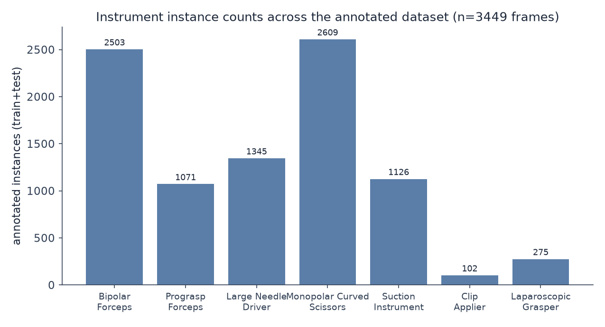
Figure 1. Instrument instance counts across the full
annotated dataset (train+test, n=3449 frames). Clip Applier is a 25.6× minority relative to
Monopolar Curved Scissors on this combined count (2503/2609/1345/... exact values below).
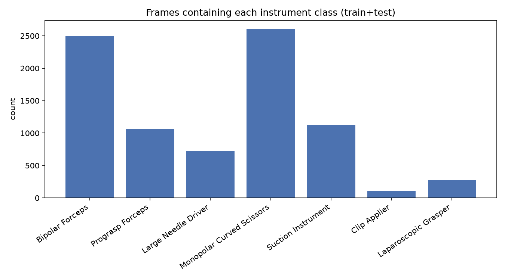
Figure 2. Number of annotated frames in which each
instrument class appears at least once (train+test combined). Compare against Figure 1: most classes
appear in nearly as many frames as they have instances (one instance per appearing frame on average),
except Large Needle Driver (1345 instances across only 720 frames — it tends to co-occur with
itself less than the other classes, or appear in bursts of multiple frames per case).
Class
Instances (train+test)
Frames containing class
Bipolar Forceps
2503
2497
Prograsp Forceps
1071
1067
Large Needle Driver
1345
720
Monopolar Curved Scissors
2609
2609
Suction Instrument
1126
1125
Clip Applier
102
102
Laparoscopic Grasper
275
275
94.7% of annotated frames (3265/3449) contain two or more instrument instances simultaneously;
1423 frames contain exactly 2, 1380 contain exactly 3, 449 contain 4, and 13 contain 5. This is why
whole-frame single-label classification is not a valid task framing on this dataset (see
§2.3) and why an explicit instrument-overlap ("occlusion") diagnostic, not
just an aggregate accuracy number, is used throughout this report from §6.4
onward.
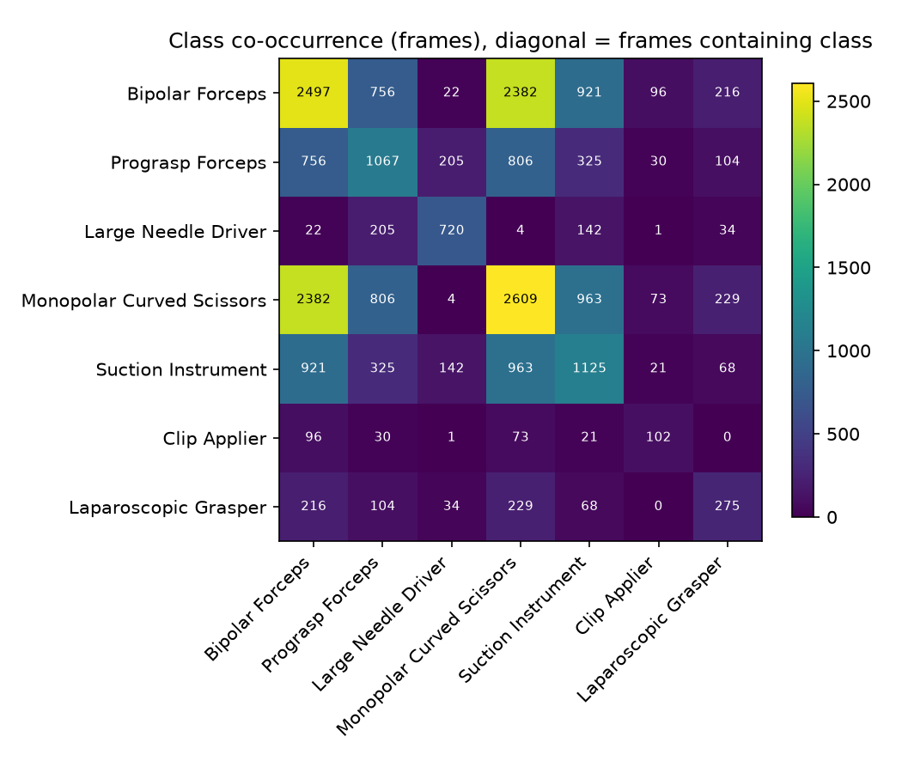
Figure 3. Instrument co-occurrence matrix, GraSP train+test.
Reused directly from the Milestone-0 dataset inspection (generated once from the annotation JSONs;
raw pairwise counts were not re-extracted as text for this revision, so this figure is not
re-derivable from a table in this document — treat the image as the primary source).
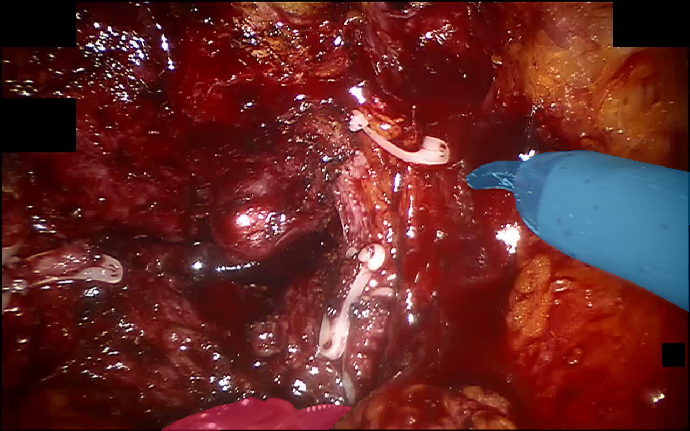
Figure 4a. Representative annotated frame with instance
mask overlay (CASE004).
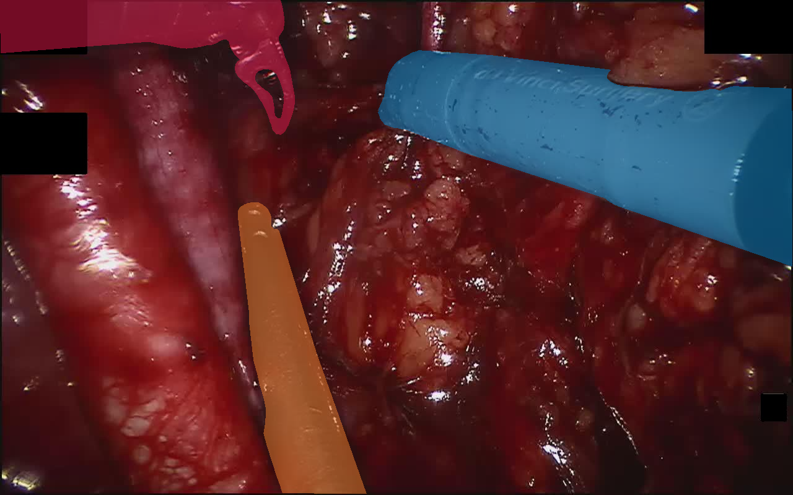
Figure 4b. Representative annotated frame with instance
mask overlay (CASE021).
2.2Train/Test Split
Splits are defined at case level by the dataset authors, not by this project. Case-level splitting
(rather than frame-level) is mandatory because frames within one case are near-duplicates; this project
never wrote a custom splitter.
Split
Cases
Case IDs
Keyframes
Instances
official train
8
CASE001, 002, 003, 004, 007, 014, 015, 021
2324
6170
official test
5
CASE041, 047, 050, 051, 053
1125
2861
fold1 (dev)
4
CASE001, 004, 014, 015
1225
3235
fold2 (dev)
4
CASE002, 003, 007, 021
1099
2935
fold1 ∪ fold2 exactly partitions the 8 official-train cases (verified: no overlap, keyframe
counts sum to the train total). Official test is never touched by fold1 or fold2. The intended usage
discipline is: fold1/fold2 for every development decision (architecture
choice, hyperparameter comparison, early stopping), official for exactly one locked
confirmatory run per finished configuration. This discipline was not followed for roughly two-thirds
of the project's history, until the gap was identified and corrected — see
Section 9 for the full account, one of the central methodological findings in
this report.
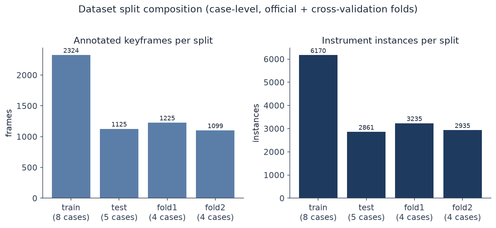
Figure 5. Case-level split composition. fold1 and fold2
are disjoint 4-case subsets of the 8 official-train cases; official test is a separate, never-touched
5-case set.
2.3Instrument Classes
Seven instrument classes: Bipolar Forceps, Prograsp Forceps, Large Needle Driver, Monopolar Curved
Scissors, Suction Instrument, Clip Applier, Laparoscopic Grasper. Two task framings are used throughout
this report:
Task A — multi-label frame classification. Seven independent sigmoid outputs, BCE
loss, per-class AP and macro-F1. This framing reflects "what instruments are in this frame" more
accurately than a single-label alternative, given that 94.7% of frames contain more than one
instrument. (Section 4)
Task B — region classification. Each annotated instrument instance is cropped from
its ground-truth mask bounding box and classified single-label into one of the 7 classes. This is the
task TAPIS itself solves with a heavy transformer head. (Section 5)
Whole-frame single-label classification (one label per frame) was never implemented: it is
ill-defined on this dataset given the 94.7% multi-instrument rate, and any number it would produce is
not meaningful.
2.4Models
Backbones and architectures used across this report, introduced at the point each is first evaluated:
MobileNetV3-Small/Large, EfficientNet-B0, ResNet-18, ResNet-50 (classification, §4.3);
Faster R-CNN with MobileNetV3-Large-FPN and ResNet-50-FPN backbones (detection, Section 6);
a from-scratch centroid-heatmap + offset-regression segmenter (§7.1); Mask R-CNN
built by adding a mask head onto an already-trained box detector, both MobileNetV3- and COCO-pretrained-ResNet-50-backed
(§7.6, §8.2); SAM2 (Segment Anything Model 2,
Hiera-Large) as a box-prompted foundation-model mask generator, zero-shot and decoder-fine-tuned
(§8.5).
2.5Training Configuration
Every experiment is described by one YAML config; no hyperparameters live in Python and no CLI flags
change results (only paths and device do). Each run writes a manifest.json containing the
full resolved config, git commit hash, seed, split file checksums, package versions, GPU name, wall-clock
duration, and final metrics — this document's numbers are sourced directly from those manifests
and from the project's internal decision log.
Augmentation constraints (applied throughout): horizontal flip, brightness/contrast/saturation/mild
color jitter, blur, noise, and mild crop/scale are permitted. Vertical flips, large rotations, and hue
shifts that would make tissue appear non-physiological are not used.
2.6Evaluation Metrics
Multi-label classification: per-class AP, mean AP, macro-F1, per-class precision/recall/F1.
Region classification: accuracy, macro precision/recall/F1, per-class F1, confusion matrix.
Occlusion-stratified recall, introduced at §6.4 and used from
that point on: for each ground-truth instance, the maximum fraction of its own bounding-box area
covered by any other co-occurring instrument's box in the same frame, bucketed isolated (no
overlap), light (≤50% covered), heavy (>50% covered), with recall computed
separately per bucket at a fixed 0.5 score / 0.5 IoU threshold. This is a box-overlap proxy, not true
pixel-level occlusion, and is evaluated at one fixed confidence threshold rather than swept the way
AP is — both caveats are carried through every table that uses it and restated in
Limitations.
2.7Hardware and Benchmarking Protocol
Primary training/eval workstation: 2× Titan Xp (12GB each, Pascal, compute capability 6.1, no
tensor cores), 32GB RAM, i5, Ubuntu. A secondary dev laptop (Windows, RTX 4060 8GB, Ada Lovelace) was
also used and verified independently. Titan Xp latency is explicitly not a deployment claim —
Pascal's lack of tensor cores and its specific memory-bandwidth/kernel-selection behavior means GPU
latency does not always rank by parameter count or FLOPs (demonstrated directly in
§4.3). Every latency number in this report additionally includes ONNX Runtime
CPU latency for portability to hardware not owned by this project.
Latency protocol, applied identically everywhere in this report: single image, batch size 1, GPU
synchronized (torch.cuda.synchronize()), warmed up, median and p95 reported over
≥200 runs. Median is reported as the headline number, not mean.
3.Experimental Roadmap
The sequence below is causal, not just chronological: each step was performed because the previous
one produced a specific result that motivated it.
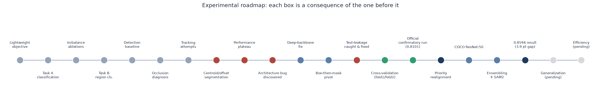
Figure 6. Experimental roadmap. Gray = scaffolding/setup,
blue = development result, green = cross-validation, navy = official confirmatory result, red =
negative/failed result that redirected the next step, light gray = not yet started.
In prose: lightweight objective → Task A classification baseline → imbalance ablations
→ Task B region classification (which revealed the rare-class problem was partly a task-framing
problem) → detection baseline → occlusion diagnosis (the recurring structural finding of the
whole project) → tracking-by-detection attempts → centroid/offset instance segmentation
→ a four-run performance plateau → an architecture bug discovered by inspecting the model,
not by more training → the deep-backbone fix → a box-then-mask architecture pivot → a
test-data-contamination bug caught and fixed → cross-validation on fold1/fold2 → the official
confirmatory run (0.8101 AP50_segm) → a project-wide priority realignment to accuracy-first
→ a COCO-pretrained ResNet-50 second backbone → ensembling and SAM2 → the current
0.8594 AP50_segm result (3.9-point gap to TAPIS) → generalization to a second dataset and an
efficiency pass, both still pending.
4.Task A: Frame-Level Classification
4.1Frozen vs. Fine-Tuned
MotivationEstablish whether a frozen ImageNet backbone is adequate before
spending compute on fine-tuning.
ConfigurationMobileNetV3-Small, official split, 20 epochs, batch 32. Frozen:
only the classification head trained (598,023 / 1,525,031 params). Fine-tuned: discriminative LR
(head 1e-3, backbone 1e-4), all 1,525,031 params trainable.
Result
Configuration
Trainable / total params
Mean AP
Macro F1
Wall clock
Frozen backbone
598,023 / 1,525,031
0.620
0.506
399.6s
Fine-tuned
1,525,031 / 1,525,031
0.711
0.645
169.4s
Laparoscopic Grasper F1 specifically: 0.024 (frozen, effectively never predicted, recall 0.012) →
0.403 (fine-tuned).
InterpretationFine-tuning outperforms the frozen backbone by a wide margin,
especially on rare classes, suggesting ImageNet features alone transfer poorly to endoscopic imagery.
The fine-tuned run overfits by
epoch 20 (train macro-F1 0.995, val plateaus 0.60–0.65 from epoch ∼8).
DecisionFine-tuning adopted as default. The overfitting signature motivates
the imbalance/regularization ablations below.
CategoryDEV — both runs used
split: official for model comparison, which the project later determined was a
methodological error (Section 9); the qualitative conclusion (fine-tuning wins)
is not considered at risk from this, but the exact numbers above were not re-verified on a fold split.
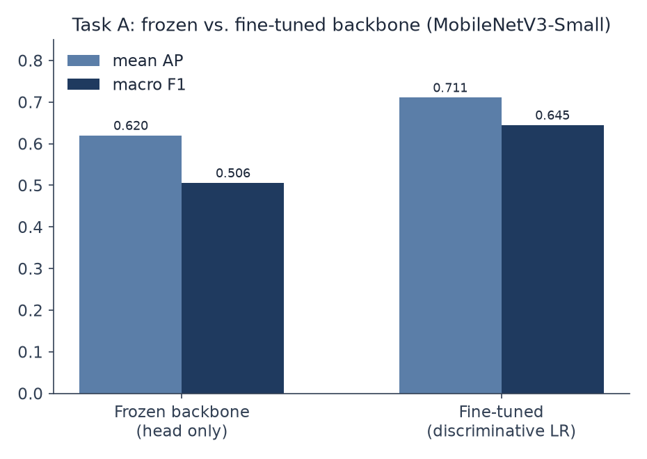
Figure 7. Task A: frozen vs. fine-tuned backbone.
4.2Class Imbalance
MotivationAddress the overfitting and rare-class failure seen above,
one variable at a time.
ConfigurationSame fine-tuned baseline; variants add weighted BCE loss
(inverse class frequency), a weighted sampler, strong augmentation, or combinations.
Result
Configuration
Mean AP
Macro F1
Clip Applier F1
Lap. Grasper F1
Baseline (fine-tuned)
0.711
0.645
0.471
0.403
+ weighted loss
0.727
0.673
0.545
0.429
+ weighted sampler
0.714
0.667
0.545
0.407
+ strong augmentation
0.756
0.672
0.500
0.437
+ weighted loss + augmentation
0.745
0.708
0.735
0.425
InterpretationAll four variants beat baseline on every metric. Weighted loss
and weighted sampler land within ~1 point of each other, as expected (both inverse-frequency-driven).
Augmentation alone behaves more like a general overfitting fix (flat val loss 0.29–0.37 vs.
baseline's climb to 0.58) than a targeted imbalance fix. Weighted loss + augmentation is the clear
macro-F1 winner, driven almost entirely by Clip Applier — the two interventions attack different
failure modes (attention allocation vs. memorization of ~64 training instances) and stack productively.
Laparoscopic Grasper never exceeds F1 ∼0.44 in any Task A run; 56% of its test instances come from a
single case (CASE050), suggesting a framing/evaluation ceiling rather than a fixable loss/sampler
problem.
DecisionWeighted loss + strong augmentation adopted as the Task A recipe for
the backbone sweep. Laparoscopic Grasper's ceiling motivates Task B (Section 5).
Figure 8. Task A imbalance ablation grid, one variable at a
time relative to the fine-tuned baseline.
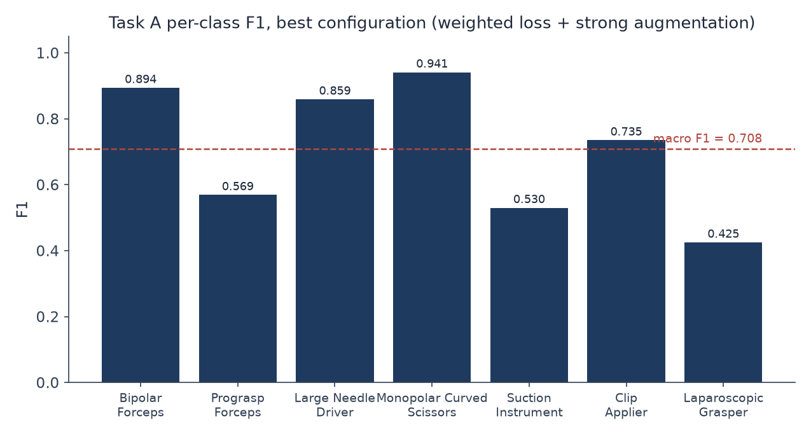
Figure 9. Per-class F1, best Task A configuration
(weighted loss + strong augmentation). Macro F1 = 0.708.
4.3Backbone Comparison
MotivationCharacterize the accuracy/efficiency tradeoff curve across
backbone capacity, deliberately including a heavy ResNet-50 baseline at the top of the curve.
ConfigurationSame recipe (fine-tuned, weighted loss, strong augmentation);
architecture is the only variable.
Result
Model
Params
Size
Titan Xp latency
ONNX CPU latency
Mean AP
Macro F1
MobileNetV3-Small (proposed)
1.53M
5.93MB
4.14ms
1.41ms
0.745
0.708
MobileNetV3-Large
4.21M
16.25MB
4.85ms
3.24ms
0.809
0.754
EfficientNet-B0
4.02M
15.59MB
6.31ms
5.95ms
0.808
0.749
ResNet-18
11.18M
42.72MB
1.95ms
9.49ms
0.798
0.740
ResNet-50 (heavy)
23.52M
90.02MB
4.98ms
21.84ms
0.862
0.799
InterpretationAccuracy ranks roughly by parameter count (ResNet-50 wins,
including Laparoscopic Grasper F1 0.622 — the only Task A configuration across every milestone to
clear 0.5 on this class). Titan Xp GPU latency, however, does not rank by parameter count: ResNet-18
has 4–8× the MACs of MobileNetV3/EfficientNet but the lowest Titan Xp latency in the sweep,
because Pascal's lack of tensor cores makes depthwise-separable convolutions FLOP-efficient but not
GPU-kernel-efficient (low arithmetic intensity, poor memory bandwidth utilization). ONNX CPU latency,
by contrast, tracks parameter count closely (MobileNetV3-Small is 15× faster than ResNet-50
there) — consistent with Titan Xp latency not being a deployment claim.
DecisionResNet-50 established as the top-of-curve heavy baseline;
MobileNetV3-Small remains the lightweight proposal. Motivates always reporting both Titan Xp and ONNX
CPU latency going forward.
Figure 10. Task A backbone accuracy, bars ordered
left-to-right by increasing parameter count.
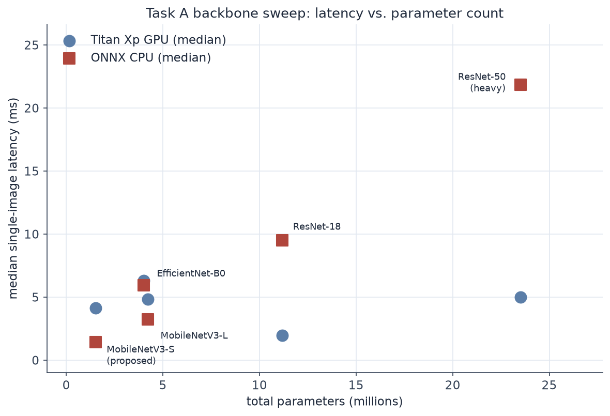
Figure 11. Task A backbone latency, same left-to-right
ordering by parameter count. Titan Xp latency (blue) does not track parameter count; ONNX CPU latency
(red) does — note ResNet-18's counterintuitively low Titan Xp latency is very likely a cuDNN
kernel-selection artifact for this specific input size, not a real efficiency property of the
architecture.
5.Task B: Region Classification
MotivationTest whether the rare-class failure (Clip Applier, Laparoscopic
Grasper) was a class-imbalance problem or a task-framing problem, by removing the localization/
disambiguation burden: crop each ground-truth instance and classify it single-label.
ConfigurationMobileNetV3-Small, fine-tuned, discriminative LR, balanced
cross-entropy loss, default augmentation, 6170 train / 2861 test instances, 20 epochs. Uncached
(native-resolution crops — the Milestone-1 resized frame cache silently produces wrong crops
here if used, since Task B's mask/box coordinates are native-resolution; fixed with a loud
ValueError on shape mismatch rather than a cryptic downstream error).
Result
Class
Precision
Recall
F1
Bipolar Forceps
0.851
0.868
0.859
Prograsp Forceps
0.712
0.742
0.727
Large Needle Driver
0.914
0.759
0.830
Monopolar Curved Scissors
0.956
0.923
0.939
Suction Instrument
0.778
0.929
0.847
Clip Applier
0.829
0.895
0.861
Laparoscopic Grasper
0.667
0.765
0.713
Macro / Accuracy
0.825 / 0.857
Class
Task A best (across all 11 runs)
Task B
Clip Applier F1
0.735 (weighted loss + augmentation)
0.861
Laparoscopic Grasper F1
0.622 (ResNet-50 heavy baseline)
0.713 (lightweight model)
InterpretationOne of the most notable findings in the project to this
point: region classification with the lightweight model beats the heaviest Task A model
on the worst classes. Confirmed via confusion matrix (Figure 13; 34/38 Clip Applier test instances land
on the diagonal), not an artifact of aggregation. The rare-class problem was partly a task-framing
problem — whole-frame multi-label classification asks the model to localize, disambiguate, and
classify simultaneously from one frame-level signal; given an isolated instance, only classification
remains. Caveat: Task B uses ground-truth instance masks, so it measures "can the model name an
instrument once perfectly told where it is," not end-to-end pipeline accuracy — it is not
comparable to TAPIS's published number for this reason, independent of any metric mismatch.
DecisionEstablished as the best lightweight result found to that point in the
project; motivates building a real detection/segmentation stage (Sections
6–7) for an apples-to-apples literature comparison.
Figure 12. Task B per-class precision / recall / F1.
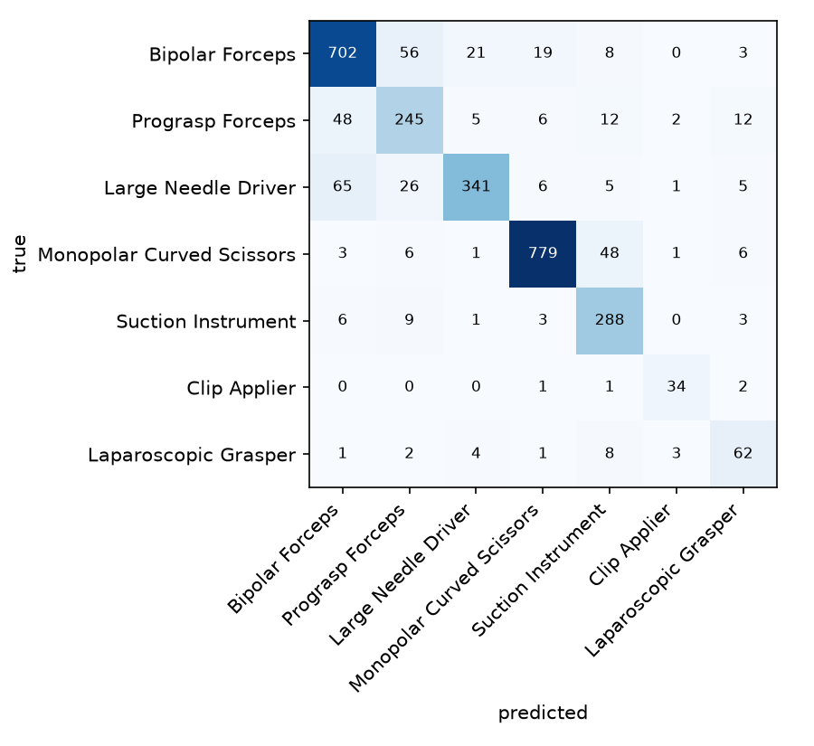
Figure 13. Task B confusion matrix (raw counts, 2861 test
instances). 34/38 Clip Applier instances and 62/81 Laparoscopic Grasper instances land on the
diagonal.
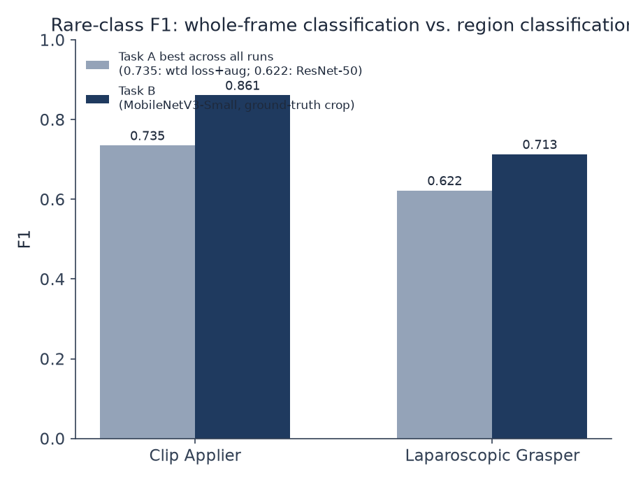
Figure 14. Rare-class F1: best Task A result (any backbone,
any imbalance intervention) vs. Task B with the lightweight model. Removing the localization burden
closes more of the gap than any imbalance intervention tried on Task A.
6.Object Detection
Boxes for detection come free from the existing instance masks; no new annotation was needed.
All detection experiments in this section use split: official for model comparison
(the pre-correction protocol; see Section 9).
6.1Baseline
MotivationEstablish the first detection baseline.
ConfigurationFaster R-CNN, MobileNetV3-Large-FPN backbone (18.9M params),
no augmentation, batch 4. Adam vs. torchvision's own SGD reference recipe compared directly.
Figure 16. Representative training curve, detection
baseline. Best checkpoint at epoch 10 by early stopping on val mAP@50; training loss continues to
fall monotonically while val mAP@50 fluctuates, illustrating why early stopping on the validation
metric (not final-epoch weights) is used throughout this project.
6.2Augmentation Experiments
MotivationStandard next lever after a baseline; box-aware augmentation had
been a disclosed gap.
InterpretationBoth variants regressed mAP; strong regressed mAP@50:95 more
sharply (−3.6pts) than mAP@50 (−1.3pts), pointing at RandomZoomOut/RandomIoUCrop
specifically hurting box localization precision. Plausible cause: these transforms are tuned for large,
visually diverse datasets (COCO); GraSP is small (2324 train frames) and visually homogeneous, so
aggressive scale/crop jitter adds distribution mismatch rather than useful diversity.
DecisionDefault augmentation changed to "none." Generic augmentation
ruled out as a lever for this dataset; motivates targeted augmentation instead
(§6.5).
CategoryDEV —
NEGATIVE RESULT
Soft-NMS — NULL RESULT
MotivationLiterature review suggested hard-NMS might be suppressing
correctly-detected-but-overlapping boxes, the diagnosed occlusion failure mode.
ConfigurationInference-only postprocessing on the trained baseline
checkpoint; hard NMS effectively disabled (box_nms_thresh=0.99), re-scored via Gaussian
soft-NMS (Bodla et al. 2017). No retraining.
ResultmAP@50 0.826 vs. 0.829 baseline; mAP@50:95 0.621 vs. 0.616;
heavy-occlusion recall 0.617 vs. 0.620 — all within noise.
InterpretationIf hard NMS were the bottleneck, soft-NMS keeping a second box
at reduced score should have recovered recall. It did not move at all — points toward the model
not producing a good candidate box for the occluded instrument in the first place (a
representation/proposal-stage problem), not a postprocessing problem.
DecisionRules out NMS postprocessing as the fix; motivates the anchor-free
architecture explored in Section 7 rather than further NMS variants.
6.3Backbone Comparison
Class-weighted detection loss
MotivationSame imbalance fix used for Task A/B, never applied to the
detector's box classifier.
ConfigurationMonkeypatched fastrcnn_loss (no public
constructor hook exists) to add class weights to box-classification cross-entropy.
Result
Variant
mAP@50
mAP@50:95
Lap. Grasper AP@50
Clip Applier AP@50
Baseline
0.8295
0.6155
0.682
0.834
Weighted loss
0.8307
0.5955
0.737 (+5.5pts)
0.824
InterpretationAggregate mAP barely moves (+0.0012), but the weakest class
gains +5.5 AP50 points at a small cost (0.5–1.3pt dips) on common classes — the pattern
typically expected from class-weighted loss. Occlusion-stratified recall unchanged (0.617 vs. 0.620),
confirming
occlusion is a structural/localization axis separate from class imbalance.
DecisionNot sufficient alone against the literature gap; launched
ResNet-50-alone and ResNet-50+weighted-loss in parallel.
Backbone/capacity scaling — NEGATIVE
MotivationDecision rule: get within ~3 points of TAPIS or trade efficiency
for accuracy via more capacity.
ConfigurationFaster R-CNN, ResNet-50-FPN backbone (41.1M params, >2×
baseline), plain and combined with weighted loss.
Result
Variant
Params
mAP@50
mAP@50:95
Wall clock
Baseline (MobileNetV3)
18.9M
0.8295
0.6155
2564s
Weighted loss (MobileNetV3)
18.9M
0.8307
0.5955
—
ResNet-50 alone
41.1M
0.8081
0.5765
8474s
ResNet-50 + weighted loss
41.1M
0.7998
0.5873
13233s
Occlusion recall for ResNet-50 alone: isolated 0.894, light 0.923, heavy 0.666 — same band as
every other variant.
InterpretationMore capacity never beat the lightweight baseline on 8 training
cases — a heavier backbone overfits rather than generalizes here. Combining levers (backbone +
weighted loss) did not help beyond the backbone alone.
DecisionSets aside the "trade efficiency for accuracy via bigger backbone"
direction for this (pre-priority-realignment) stage of the project. This is later revisited
under the accuracy-first priority with a differently-pretrained ResNet-50
(§8.2) — that result does not contradict this one; the ResNet-50 here is
only ImageNet-classification-pretrained, the later one is fully COCO-instance-segmentation-pretrained,
a materially different starting point.
CategoryDEV —
NEGATIVE RESULT
6.4Occlusion Analysis
MotivationCOCO's small/medium/large-area AP breakdown is meaningless on
GraSP (only 2 train / 1 test instance falls under COCO's "small" threshold; checked directly, not
assumed). The real concern is occlusion between co-occurring instruments (∼30% of pairs have
overlapping boxes, ∼10% with one >50% covered).
ConfigurationOcclusion-stratified recall (defined in
§2.6), computed automatically at the end of every detection run from this
point forward.
Result
Variant
Isolated
Light
Heavy
Strong augmentation
0.881
0.913
0.645
Light augmentation
0.895
0.909
0.606
Weighted loss
0.902
0.918
0.617
ResNet-50
0.894
0.923
0.666
ResNet-50 + weighted loss
0.885
0.926
0.634
Copy-paste
0.899
0.920
0.645
InterpretationEvery variant lands in the same 0.606–0.666
heavy-occlusion recall band regardless of backbone size, loss weighting, or augmentation strategy
— a ∼25–30 point recall drop from the isolated rate that none of the Faster R-CNN
variants tried closes. This points to a structural limitation in the box-proposal + NMS pipeline
(confirmed not NMS-suppression-specific by the soft-NMS null result above) rather than something
specific to any one backbone, loss, or augmentation choice.
DecisionPrimary evidence base motivating the architecture change in
Section 7.
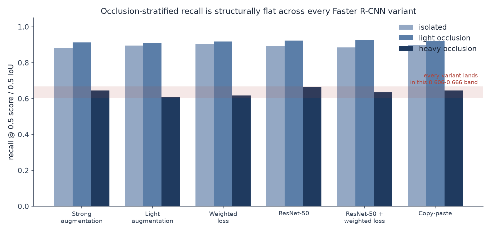
Figure 17. Occlusion-stratified recall across every
Faster R-CNN variant tried in this section.
6.5Copy-Paste
MotivationOcclusion diagnosed as a proposal/NMS-pipeline problem, not yet
ruled out as a training-distribution problem; copy-paste (Ghiasi et al. 2021) directly increases
occlusion exposure and rare-class representation in one intervention.
ConfigurationPastes real Clip Applier instance crops (GraSP's own
per-instance masks, no synthetic data) onto other training frames, 70% biased to land on top of an
existing box. MobileNetV3-Large-FPN backbone.
ResultmAP@50 = 0.826, mAP@50:95 = 0.590 — matches baseline within
noise, the best Milestone-8 follow-up. Per-class AP@50: Bipolar Forceps 0.940, Prograsp Forceps 0.714,
Large Needle Driver 0.947, Monopolar Curved Scissors 0.968, Suction Instrument 0.741,
Clip Applier 0.780, Laparoscopic Grasper 0.696. Occlusion recall: isolated 0.899, light 0.920,
heavy 0.645 — unchanged.
InterpretationBest aggregate follow-up so far, confirming augmentation
targeted at a diagnosed problem (imbalance + occlusion exposure) works where generic augmentation and
generic capacity did not. But occlusion-stratified recall did not move despite deliberately increasing
occlusion exposure during training (occlusion_bias=0.7) — an important
negative result on mechanism: the occlusion gap is not a
training-distribution problem. Pasting more occluded examples does not teach the model to separate
overlapping boxes better, because the proposal/NMS mechanism itself is what is failing, not its
training exposure.
DecisionStrongest evidence yet that an architecture change
(Section 7), not another data/loss ablation, is the right lever. Copy-paste
adopted as the best detection-stage augmentation regardless.
CategoryDEV — mixed result (best
aggregate number, negative on the mechanism it targeted)
Detection variant summary
mAP@50
Δ vs. baseline
Interpretation
Baseline (Adam)
0.8295
—
Reference
Light augmentation
0.8040
−0.0255
Harmful
Strong augmentation
0.8157
−0.0138
Harmful
Weighted loss
0.8307
+0.0012
Small overall effect, large per-class effect
ResNet-50
0.8081
−0.0214
Overfits on 8 cases
ResNet-50 + weighted loss
0.7998
−0.0297
Worse than ResNet-50 alone
Copy-paste
0.8264
−0.0031
Helps Clip Applier, occlusion recall unchanged
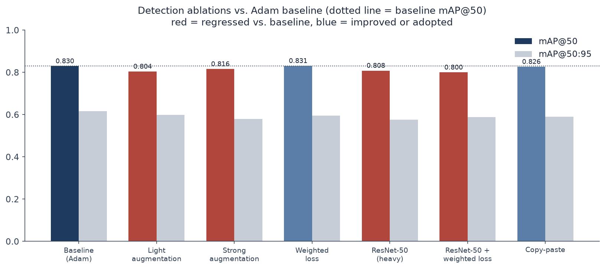
Figure 18. Detection ablations vs. baseline. Dotted line
marks the baseline mAP@50.
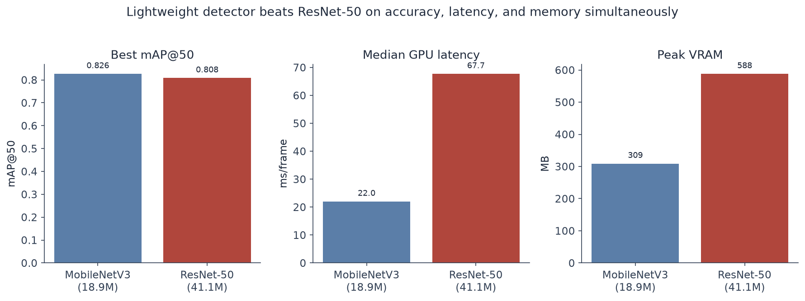
Figure 19. The lightweight detector (copy-paste variant)
beats ResNet-50 on accuracy, latency, and memory simultaneously.
6.6Tracking-by-Detection
This required multiple rounds; documented as a single throughline.
MotivationLatency headroom (∼22ms/frame, well under a 33ms real-time
budget) plus raw intermediate video frames existing at ∼1fps between sparse annotations (e.g.
CASE001: 10,972 raw files vs. 329 annotated) — checked directly before building anything.
Configuration v1IOU-Tracker (Bochinski et al. 2017, greedy box-IoU
association) with track survival through max_age missed frames, windowed inference around
each annotated frame.
Result v1Recall improved in every bucket: isolated 0.899→0.913, light
0.920→0.930, heavy 0.645→0.683 — moving heavy-occlusion recall outside the
0.606–0.666 band seen in every prior variant. A causal-only rerun (backward-looking window) gave
identical numbers, confirming no look-ahead leak in the original windowed setup.
Configuration v2 (full COCO-style mAP)Full COCO-style mAP@50
needs a low score threshold for a real precision/recall curve, not just the fixed-threshold recall
table above.
Result v2 — NEGATIVE, correctivemAP@50
got worse with tracking: 0.7899–0.7900 tracked vs. 0.8264 raw (∼3.7pt drop),
while occlusion recall barely moved this time (heavy 0.645→0.652–0.655, far short of the
earlier 0.683).
Root causeLow score threshold let far more low-confidence detections become
track material; any unmatched-but-alive track coasted forward on its last box regardless of why it went
unmatched. Two failure modes: noise-born tracks coasting as confident-looking false positives, and
tracks from instruments that genuinely left frame still coasting on a stale box.
Fixesmin_confidence_to_coast=0.5 alone: mAP@50 = 0.7914
(barely moved — low-confidence coasting was not the dominant failure mode). Boundary-exit
detection (drop a track immediately if it was moving off-frame when its gap started) combined with
confidence gating: mAP@50 = 0.8034 — boundary-exit did almost all of the recovery,
confirming the dominant failure mode was confident tracks going stale on real frame-exit.
Configuration v3, occlusion-corridor — NEGATIVE
On a track's first missed frame, extrapolate its box by velocity; if it overlaps another real
detection, treat the gap as corroborated occlusion and grant a longer occluded_max_age.
Three variants tried (one-shot short: 0.8048; one-shot long: 0.8089; continuous-evidence: 0.8056),
all still below plain max_age=1 (0.8130). GraSP frames routinely contain 2–3 co-occurring
instruments (94.7%), so "another box overlaps the predicted position" is true almost constantly
regardless of real occlusion — too weakly discriminating in practice on this dataset.
Overall decisionBest configuration (confidence-gating + boundary-exit +
max_age=1) reaches mAP@50 = 0.8130, still 1.34 points below the raw detector (0.8264) —
net negative on mAP@50, despite a real, validated, causally-checked recall benefit at the
fixed-threshold diagnostic level, and despite two genuine bugs
found and fixed along the way. Reported as a validated-but-not-yet-net-positive research direction, not
adopted. The first tracking result initially looked like a clean win after the causality check alone;
the more demanding mAP check told a different story — a methodological lesson in its own
right.
CategoryDEV —
NEGATIVE on headline metric, positive on a fixed-threshold diagnostic
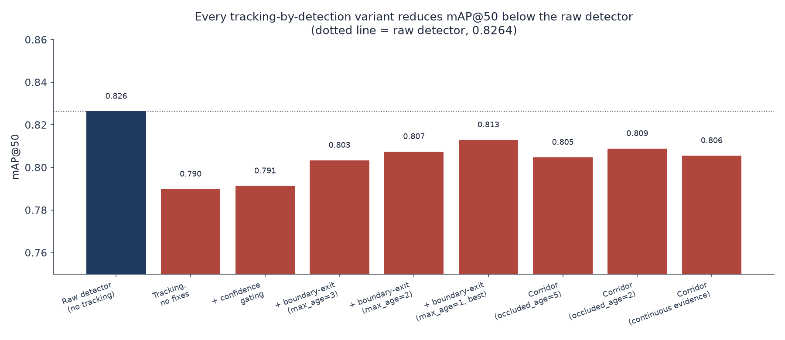
Figure 20. Every tracking-by-detection variant tried reduces
mAP@50 below the raw detector.
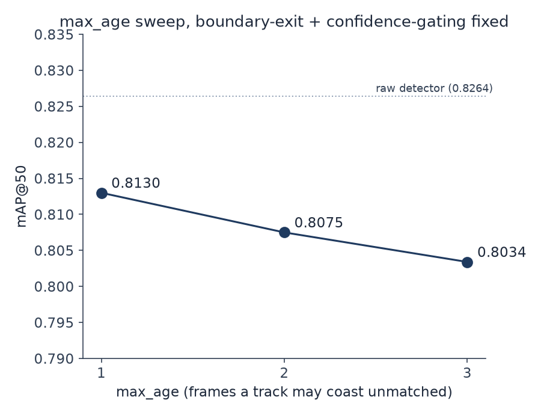
Figure 21. max_age sweep, boundary-exit + confidence-gating
fixed. Shorter coasting windows lose less precision.
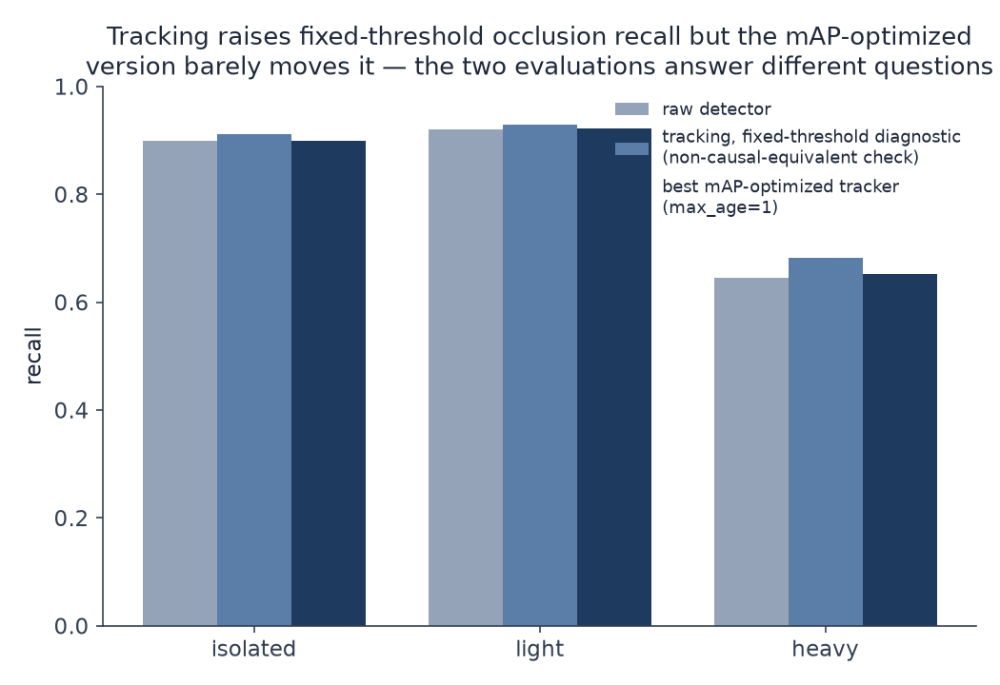
Figure 22. Occlusion recall at a fixed threshold rises with
tracking; the mAP-optimized version (right bar) barely moves it. These are two different diagnostics
answering two different questions, not a contradiction.
7.Instance Segmentation
7.1Initial Architecture
MotivationOcclusion diagnosed (§6.4) as a
structural Faster R-CNN/NMS limitation, not fixable by tuning; an anchor-free, NMS-free architecture
was needed.
ConfigurationA semantic segmentation head (per-pixel class) plus a
centroid-heatmap + offset-regression head for instance separation — a practical combination of
Kurmann et al. 2021's heatmap+offset approach and a two-head structure closest to Cheng et al. 2020
Panoptic-DeepLab, not a reproduction of either. Backbone: MobileNetV3-Large-FPN with
returned_layers=[1,2], chosen (at the time) from inspecting the model's actual stage
strides. Model: 2.1M parameters.
Bug caught before trainingThe heatmap head's final conv was bias-initialized
to −2.19 (CenterNet convention) but not weight-zeroed, so weights still dominated output at init
and focal loss's log(1−pred) term exploded (heatmap loss ∼1691 instead of
expected low tens). Fixed via standard zero-weight-init on that layer; heatmap loss dropped to ∼25,
matching a hand-computed expected value. Caught by a real 16-frame, 2-epoch smoke test before calling
scaffolding complete, not by training at scale.
CategoryDEV (infrastructure)
7.2Performance Plateau
Run 1: baseline, patience 10 mIoU = 0.308, mean Dice = 0.448.
Instance-level AP50_segm = 0.0017 (near-broken). Occlusion-stratified recall 0.087/0.062/0.094
(isolated/light/heavy) — uniformly near-zero, not even ordered by occlusion level.
Diagnosis, run 1Heatmap peak-finding defaults were copied from COCO-scale
CenterNet (score_threshold=0.1, nms_kernel=3), finding 14–41 candidate
peaks per image against 1–4 real instances. Confirmed via a decode-parameter sweep on the same
checkpoint: (0.1, 3) → AP50=0.0027, avg 21.6 predicted/image vs. 2.6 real; (0.3, 7) →
AP50=0.1036 (∼38× higher), avg 2.7 predicted/image vs. 2.6 real. Fixed decode defaults to
(0.3, 7).
Run 2: extended patience (150 epochs, patience 30) mIoU = 0.319,
AP50_segm = 0.1105, occlusion recall 0.334/0.399/0.105. Real progress, but two problems: absolute
recall (isolated 0.334) far below Faster R-CNN's equivalent (∼0.88–0.90) for a 125-epoch,
from-scratch, 2.1M-param model; and the relative occlusion penalty was worse than Faster
R-CNN's (heavy/isolated ratio 0.105/0.334 = 0.31 here vs. 0.645/0.899 = 0.72 for the detector's
copy-paste variant) — opposite of the architecture's own hypothesis.
Run 3: cosine LR (targeting periodic heatmap-loss spikes at fixed LR)
mIoU = 0.321, AP50_segm = 0.0982, occlusion recall 0.323/0.396/0.073 — training stabilized
(spikes gone) but AP50_segm and occlusion recall did not improve.
Run 4: copy-paste ported to segmentation mIoU = 0.309, AP50_segm = 0.1216
(best of the four), occlusion recall 0.339/0.411/0.087 — a small real improvement across every
bucket vs. plain cosine-LR, but the heavy/isolated ratio (0.26) stayed in the same 0.23–0.31
band.
InterpretationThree independent single-variable interventions (patience, LR
schedule, data augmentation) across four runs converged to the same mIoU ∼0.31–0.32, AP50_segm
∼0.10–0.12, heavy-occlusion recall ∼0.07–0.11 plateau. No longer readable as "just
needs more training" — training is stable and converged. The ceiling looked, at this point, like
capacity or architecture design, not optimization.
DecisionStop the hyperparameter chase. This left a genuine choice rather than
an obvious next step: pursue a segmentation capacity increase (bigger, riskier) or continue tuning
detection (more mature). Tracking-by-detection was pursued first (§6.6);
segmentation capacity was revisited afterward.
CategoryAll four runs DEV —
repeated negative result, four independent runs capping ∼0.31–0.32
mIoU / ∼0.10–0.12 AP50_segm
Segmentation plateau runs
mIoU
AP50_segm
Occlusion recall (iso/light/heavy)
Baseline (patience 10)
0.308
0.0017
0.087/0.062/0.094
Extended patience
0.319
0.1105
0.334/0.399/0.105
Cosine LR
0.321
0.0982
0.323/0.396/0.073
Copy-paste (shallow)
0.309
0.1216
0.339/0.411/0.087
7.3Architecture Bug Diagnosis
TriggerScoping what a serious segmentation capacity increase would look
like. Inspecting models/segmenters/centroid_offset.py directly — rather than
assuming "just needs to be bigger" — found a real, previously undiagnosed bug.
The bugreturned_layers=[1, 2] was chosen to get a cheap fine
stride-4 FPN output, but mobilenet_backbone/IntermediateLayerGetterprunes the network to stop at the deepest requested stage. Requesting only shallow stages
(stride 4 and 8, 24 and 40 channels) meant MobileNetV3-Large's entire deep half — up to its
960-channel final stage, where most of its actual semantic capacity lives — was never computed
at all: not frozen, not present in the model's graph.
ConsequenceEvery one of the four plateaued runs was training a model that
literally could not see deep features. Confirmed by direct gradient inspection: the deepest backbone
layers had zero graph presence under the old returned_layers.
FixRegistered a second variant, returned_layers=[1, 3, 5]
(stride 4/16/32 at 24/80/960 channels), standard FPN usage feeding shallow-through-deep inputs into a
top-down pathway. Backbone grows ∼1.9M→∼5.0M params, full model 2.1M→5.88M —
still far lighter than the 18.9M-param detector. The original registration is kept unchanged so its
four existing runs stay reproducible.
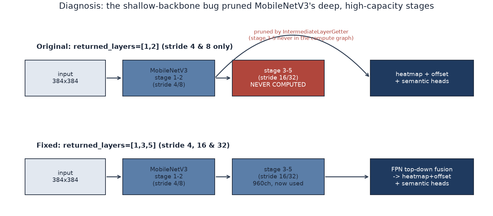
Figure 23. The shallow-backbone bug: requesting only stride
4/8 stages caused the deep, high-capacity stages to be pruned from the computation graph entirely, not
merely frozen.
7.4Corrected Architecture
Result, deep backbone alone Val mIoU = 0.5163 by epoch 5 —
already 60%+ above the shallow variant's entire four-run plateau (∼0.32, reached only after
70–100+ epochs). Clear confirmation that the shallow-features bug, not capacity or training, had
been the ceiling.
Final results, deep backbone alone and + copy-paste
Configuration
mIoU
AP50_segm
Occlusion recall (iso/light/heavy)
Deep backbone (fixed)
0.637
0.3785
0.577/0.642/0.153
Deep backbone + copy-paste
0.654
0.3802
0.557/0.615/0.185
InterpretationSemantic quality (mIoU) improved substantially, but the
instance-level metric that is actually comparable to the literature (AP50_segm) remained far short
— still a 52.1-point gap to TAPIS's 89.85 even after the capacity fix. This result suggested that
dense heatmap-based instance separation is poorly suited to a metric that scores precise per-instance
mask boundaries. Every published high-AP50_segm result, TAPIS included, uses proposal-based instance
segmentation instead (§7.6).
CategoryDEV
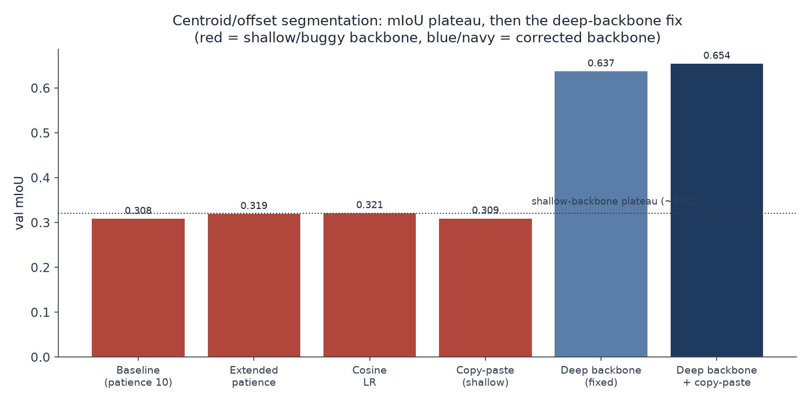
Figure 24. mIoU across the four shallow-backbone runs and
the two deep-backbone runs. The plateau was a capacity ceiling, not a training-recipe problem.
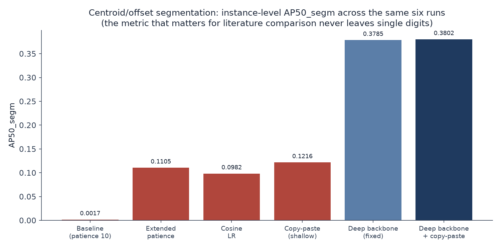
Figure 25. AP50_segm across the same six runs. The
metric that matters for literature comparison stayed in the single digits even after the capacity fix
— the mIoU jump did not translate into a comparable instance-level jump, motivating the
architecture-family pivot in §7.6.
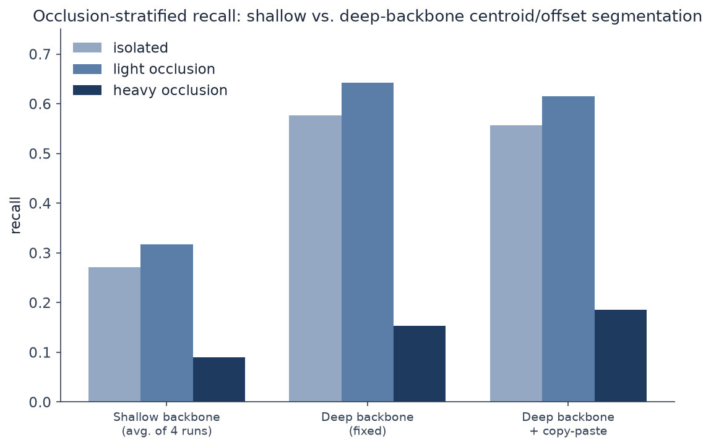
Figure 26. Occlusion-stratified recall, shallow (averaged
across 4 runs) vs. deep-backbone centroid/offset segmentation.
7.5Tracking on Segmentation
NEGATIVE — same pattern as detection
ConfigurationIOU-Tracker attached to the centroid/offset segmenter's decoded
instances (windowed raw-frame tracking, same mechanism as detection's tracker).
ResultHeavy-occlusion recall improved 0.185→0.199 (∼+7.6% relative)
at the cost of AP50_segm dropping 0.380→0.351 (coasted/stale masks becoming false
positives) — the same net-negative-on-headline-metric pattern as detection's tracking result.
DecisionNot pursued further: tracking only changes which instances get
reported, it cannot touch the semantic head's per-pixel mIoU, so it was never going to move the metric
that matters here.
7.6Box-Then-Mask Architecture
Rather than continuing to scale the centroid/offset (heatmap-clustering) architecture, the project
switched architecture family entirely: predict a mask per proposed box (Mask R-CNN), reusing the
already-trained detection box detector as a warm start (only the new mask head starts untrained). This
directly tests the §7.4 diagnosis: if the gap really is architecture-family mismatch rather than
capacity or training, switching families while holding box-detection quality constant should close
most of the gap in one run.
Figure 27. Box-then-mask architecture: box localization is
inherited from the already-trained detector; only the mask head is new.
A second, worse leakage bug caught before it produced a real number
The first launch, on fold1, produced an impossible number: val mAP@50 = 0.9946 after epoch 1. Root
cause: fold1's val split is 4 of the same 8 official-train cases the warm-start checkpoint's
backbone/RPN/box-head were already fit to via gradient descent (trained under
split: official). Evaluating on fold1 after warm-starting from it measures memorization of
frames the box components had literally already received weight updates from — a strictly worse
leakage than the official-split-as-validation issue in Section 9 (that one was
selection bias from early-stopping; this is direct training-set reuse). Fixed by retraining the
box detector from scratch scoped to the same fold boundary and warm-starting the Mask R-CNN from that
checkpoint instead. Killed the contaminated run immediately (one epoch, ∼2.5 min GPU time) rather
than let it finish and need a caveat attached after the fact.
Result, fold1 CROSS-VAL AP50_segm = 0.8458,
occlusion recall 0.934/0.955/0.713. Per-class AP@50: Monopolar Curved Scissors 0.977, Large Needle
Driver 0.967, Bipolar Forceps 0.937, Clip Applier 0.893, Suction Instrument 0.887, Prograsp Forceps
0.781, Laparoscopic Grasper 0.711 (weakest, consistent with every other task).
InterpretationA substantial jump rather than an incremental improvement.
AP50_segm 0.380→0.846 closes the 52-point gap to ∼5.3 points, exceeding the expectation set
before the run (a Mask R-CNN result landing within a few points of TAPIS's own purpose-built
transformer was considered very unlikely going in). Heavy-occlusion recall jump (0.185→0.713) is
larger than anything else attempted in the project, including the tracker. Caveat stated at the time:
one fold's result, not yet cross-validated.
InterpretationTwo independent folds, disjoint training cases, independently
fold-scoped warm-start detectors, land within 0.3 points of AP50_segm and within 3 points of
heavy-occlusion recall — a real cross-validated result. Average: AP50_segm = 0.8446,
heavy-occlusion recall = 0.698 (vs. 0.185 on the old architecture, a 3.8× improvement).
DecisionCloses the architecture-diagnosis loop: the 52-point gap really was
an architecture-family mismatch. Proceed to the one locked-in official confirmatory run.
7.8Official Confirmatory Evaluation
Configuration OFFICIAL Warm-started from
the official-split detector (no leakage: its box components never saw official-test via gradient
descent, only via the already-disclosed, much milder early-stopping-selection leakage described in
Section 9).
Result — the number that actually gets reported
Split
AP50_segm
Occlusion recall (iso/light/heavy)
Box mAP50/50:95
fold1 (dev)
0.8458
0.934/0.955/0.713
0.879/0.637
fold2 (dev)
0.8433
0.902/0.948/0.682
0.864/0.631
official (reported)
0.8101
0.909/0.930/0.672
0.837/0.628
Per-class AP50_segm (official): Monopolar Curved Scissors 0.978, Large Needle Driver 0.960, Bipolar
Forceps 0.930, Clip Applier 0.839, Suction Instrument 0.778, Laparoscopic Grasper 0.708,
Prograsp Forceps 0.667 (weakest here — notably not Laparoscopic Grasper, the usual weakest
class everywhere else; a split-dependent wrinkle, not investigated further).
InterpretationGap to TAPIS = 8.8 points — wider than the
fold-average estimate (5.4 points from the 0.8446 average, or "5.3 points" as estimated from fold1
alone), though nowhere near the original architecture's 52-point gap. Honest lesson: fold1/fold2
agreeing tightly confirmed the result was repeatable, not that it would exactly predict the
official number — different case composition (8 cases vs. 4 per fold) and a genuinely different,
never-touched 5-case test set both explain the discrepancy.
DecisionAP50_segm = 0.8101 established as this project's headline
instance-segmentation number prior to the priority realignment — not 0.8446, and not either
fold number.
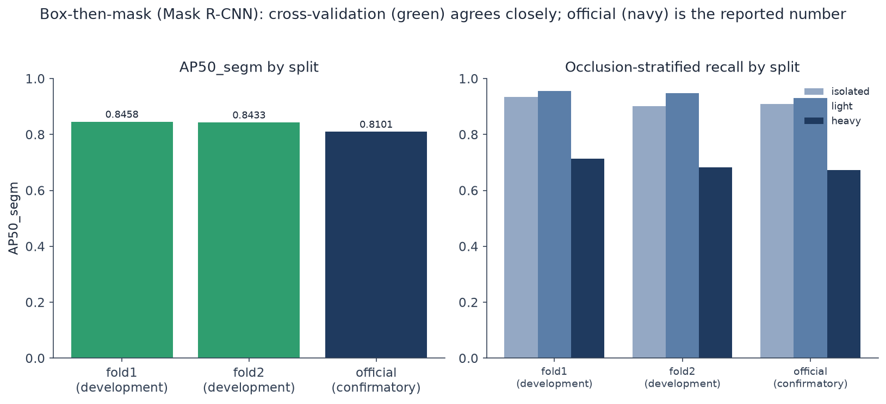
Figure 28. Box-then-mask across fold1, fold2, and official.
Development splits (green) agree closely; official (navy) is the number that is actually reported.
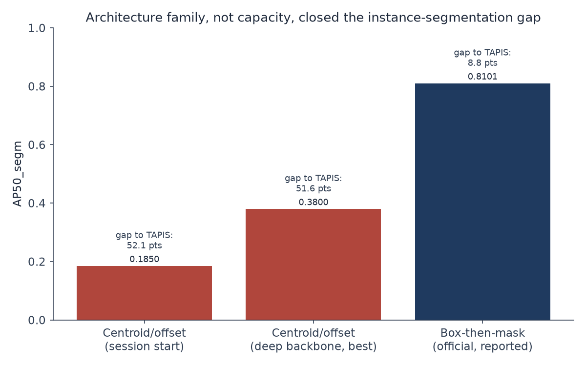
Figure 29. Architecture family, not capacity, closed the
instance-segmentation gap: the deep-backbone capacity fix alone (still centroid/offset) barely moved
AP50_segm; switching to box-then-mask closed the great majority of the remaining distance.
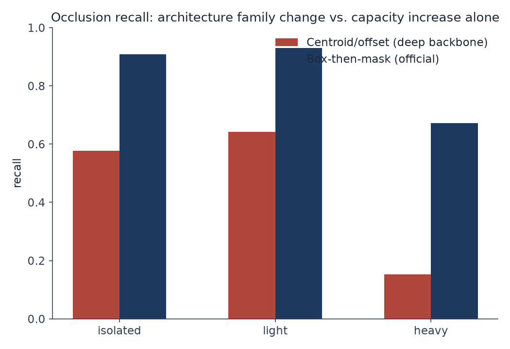
Figure 30. Occlusion-stratified recall: the deep-backbone
centroid/offset segmenter vs. box-then-mask (official). The architecture-family change, not the
capacity increase alone, is responsible for the heavy-occlusion recall jump.
Four confirmatory-adjacent ablations, all negative against the official number
Each of these looked promising on a development split first, then failed to beat 0.8101 when
checked on official.
Ablation
fold1 (dev)
official
Outcome
From-scratch training (vs. warm-started)
0.8605 (+0.0147)
0.8061 (−0.0040)
reversed
Copy-paste on Mask R-CNN
0.8646 (+0.0188)
0.7734 (−0.0367)
reversed
WBF ensemble of fold1+fold2 models (leakage-free)
—
0.7934
below official single model
The from-scratch ablation, tested a second time framed as one of four independent attempts to beat
0.8101 (alongside tracking, copy-paste, and the ensemble): from-scratch box mAP50/50:95 = 0.820/0.546
vs. warm-started 0.837/0.628, AP50_segm 0.8061 vs. 0.8101. The fold1/fold2 WBF ensemble (0.7934)
did improve over each individual fold model (0.7652, 0.7616 — ensembling two
independently-trained, disjoint-case models is a real, unsurprising gain), but did not reach the single
model trained on the complete 8-case official training set (0.8101): two 4-case models fused don't
match one model trained on all 8 at once, and doubling inference cost bought nothing net.
0.8101 appears to be a reliable number for this architecture family rather than an artifact of
undertraining or a favorable warm start: four independent attempts, three of which looked promising on
a development split first, all failed to beat it on the real, never-touched test set. This suggests
diminishing returns from further tuning within this Mask R-CNN configuration; further gains likely
require a different lever, which is exactly what
Section 8 pursues.
8.Accuracy-First Extension
8.1Change in Project Objective
The priority changed mid-project
After the four failed attempts closing §7.8 (none closing the gap to
anywhere near the original 3-point target), direct guidance came back from the PhD students running
the upstream research this project feeds into: accuracy is the top priority, lightweight is
secondary, not simultaneous — get accuracy as high as possible first, ideally above TAPIS's
published benchmark; only once that is solid, check generalization to a second dataset; only after
that, look into making the winning approach lightweight (see Section 1). Every
design decision from Task A onward (MobileNetV3 as default backbone, avoiding heavier backbones after
ResNet-50 overfit the detector in §6.3) was made under the opposite priority.
What did not change: the occlusion diagnosis, the architecture-family lesson, and every honestly
reported number in Sections 4–7 stand as before. What changes
is which direction gets pursued next, and the fact that this section's results, from here on, are no
longer optimized to stay lightweight.
8.2COCO-Pretrained ResNet-50
Configuration OFFICIALmaskrcnn_resnet50_coco: backbone, RPN, box head, and mask head all pretrained on
COCO instance segmentation — not just ImageNet backbone-only pretraining, unlike the earlier
Milestone-8 "heavy ResNet-50" baseline (§6.3). lr=5e-5 (conservative, to avoid
disrupting pretraining), fine-tuned directly on official split, 45.7M total params, wall clock
17217s (∼4.8h).
Result
Official test
AP50_segm
Isolated
Light
Heavy
MobileNetV3 (previous best)
0.8101
0.909
0.930
0.672
COCO ResNet-50
0.8132
0.897
0.929
0.666
InterpretationFirst result to beat 0.8101 after five failed attempts this
session (tracking, copy-paste, ensemble, from-scratch MobileNetV3, and SAM2 zero-shot — see
§8.5). Small edge (+0.0031); notably occlusion recall is slightly worse in
every bucket, so the gain is not from finding more occluded instances but from elsewhere in the
precision/recall curve (most likely fewer false positives). Given this project's observed
fold-vs-official divergences of several points elsewhere, +0.0031 is real but modest, not proof of
decisive superiority — though it is the correct direction under the new priority (heavier
backbone with full-task pretraining, not just backbone-only pretraining). Note this does not contradict
§6.3's negative result for ResNet-50 in detection: that backbone was only
ImageNet-classification-pretrained; this one is fully COCO-instance-segmentation-pretrained, a
materially different starting point and overfitting-risk profile.
DecisionCost/benefit was 4.8 GPU-hours for +0.0031 — reasonable once,
not a repeatable strategy on its own. Next, cheap step: ensemble with the original MobileNetV3 result.
8.3Two-Model Ensemble
Configuration OFFICIAL Weighted Boxes
Fusion (Solovyev et al. 2021) of MobileNetV3 (0.8101) + COCO ResNet-50 (0.8132): overlapping
same-label detections are averaged (score-weighted), while non-overlapping detections still count
individually at diluted confidence.
Result
Official test
AP50_segm
Isolated
Light
Heavy
MobileNetV3 alone
0.8101
0.909
0.930
0.672
COCO ResNet-50 alone
0.8132
0.897
0.929
0.666
Ensemble (WBF)
0.8481 (+0.0349)
0.921
0.946
0.711
Interpretation+0.0349 over the best single model, with every occlusion
bucket also improving — opposite pattern from the earlier fold1/fold2 same-architecture ensemble
(§7.8, 0.7934). Genuinely different backbones/pretraining regimes
(MobileNetV3/ImageNet vs. ResNet-50/COCO-instance-seg) produce more complementary errors than the same
architecture trained on two case subsets — model diversity paying off here, not just data
diversity. New gap to TAPIS: ∼5.0 points, for near-zero additional GPU cost (pure inference on two
already-trained models). This comes at a real cost, however: two full models (21.6M + 45.9M params)
run per image at inference.
DecisionAdd a third, independently-trained model.
8.4Three-Model Ensemble
Configuration OFFICIAL Adds the
from-scratch-trained MobileNetV3 official model as a third member — itself the weakest of the
three alone (0.8061, per §7.8's ablation table).
Result
Official test
AP50_segm
Isolated
Light
Heavy
Two-way ensemble
0.8481
0.921
0.946
0.711
Three-way (+ from-scratch MobileNetV3)
0.8553 (+0.0072)
0.929
0.948
0.725
New gap to TAPIS: ∼4.3 points.
InterpretationAnother real gain from adding a model that was individually
worse than the existing ensemble — reinforces that ensemble value here comes from error
diversity, not from each member being independently strong.
Methodological note: an OOM bug found and fixed The first two attempts at
this crashed silently around image 900/1125. Initially misattributed to a coincidental network outage;
dmesg on the workstation revealed the real cause — a kernel OOM kill
(anon-rss: 28548244kB against 31GB total system RAM). Root cause: the script held every
individual model's per-image mask predictions in memory in addition to the ensemble's, for the full
1125-image set — fine at 2 models, not 3. Fixed by dropping the redundant individual-model
accumulation. General lesson recorded: an intermittent-looking failure that coincides with a
known unrelated issue is still worth checking against system logs before assuming the coincidence
explains it.
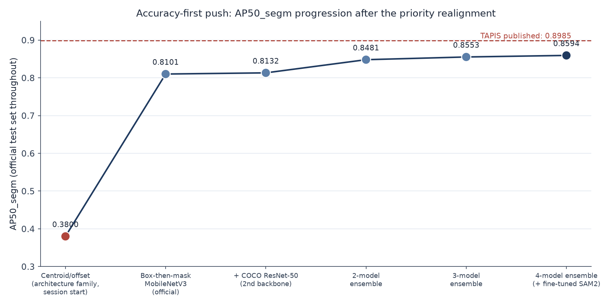
Figure 31. AP50_segm progression across the full
accuracy-first push, official test set throughout — every step measured against the same
never-touched official test data as every other official result in this report.
8.5SAM2
Zero-shot — NEGATIVE vs. own model
MotivationChecked against real literature first (arXiv 2408.01648; npj
Digital Surgery's SAM surgical-video evaluation) — a known, characterized direction, not
novel.
ConfigurationThe already-trained box detector (AP50_box 0.831) finds/classifies
each instrument; each predicted box prompts SAM2.1 (Hiera-Large, frozen, zero-shot) for the mask.
InterpretationWorse across every metric — consistent with the
literature's own caveat that performance varies under dynamic surgical conditions; SAM2 was never
trained on surgical video. Not adopted as-is, but decoder fine-tuning flagged as a real, untested next
question.
Decoder fine-tuning
ConfigurationImage encoder frozen throughout; only the mask decoder trained,
8 epochs to early-stop (best val_loss=0.0913, epoch 4).
Result
SAM2 (box-prompted, official test)
AP50_segm
Heavy recall
Zero-shot (frozen decoder)
0.7690
0.624
Fine-tuned decoder
0.7966 (+0.0276)
0.638
Interpretation+0.0276 AP50_segm from decoder-only fine-tuning confirms the
approach works, but this is still the weakest individual model in the project (below even from-scratch
Mask R-CNN's 0.8061). Full per-class breakdown was not recorded for the fine-tuned model specifically
(only the zero-shot per-class table above was captured) — noted as a gap in
Appendix C rather than estimated.
DecisionGiven the three-way ensemble already showed a weaker model (0.8061
alone) still improving the ensemble via error diversity, testing SAM2 as a fourth member is a
reasonable, cheap next step.
8.6Four-Model Ensemble
Configuration OFFICIAL Adds the
fine-tuned SAM2 decoder (box-prompted by the same detector) as a fourth member, via a script
generalized for SAM2's different inference interface (same OOM lesson applied — only ensemble
predictions accumulated).
Result — full overnight progression, all evaluated identically on
official test
Result
AP50_segm
Isolated
Light
Heavy
Gap to TAPIS (89.85)
Session start (centroid/offset)
0.380
—
—
0.185
52.1 pts
Best single Mask R-CNN (MobileNetV3)
0.8101
0.909
0.930
0.672
8.8 pts
Best single Mask R-CNN (COCO ResNet-50)
0.8132
0.897
0.929
0.666
8.5 pts
Two-way ensemble
0.8481
0.921
0.946
0.711
5.0 pts
Three-way ensemble
0.8553
0.929
0.948
0.725
4.3 pts
Four-way ensemble (+ SAM2)
0.8594
0.923
0.950
0.718
3.9 pts
InterpretationOcclusion recall is not monotonically improving with each
addition (isolated and heavy both dip slightly from three-way to four-way even as overall AP50_segm
rises) — consistent with AP50 integrating the full precision/recall curve rather than recall at
one fixed threshold. Closest the project has gotten to the original 3-point bar by a wide margin,
achieved primarily through architecture diversity (different backbones plus a structurally different
foundation-model pipeline) combined at inference time, at a fraction of the cost of further training.
Diminishing returns per added member: +0.0349 (2-way), +0.0072 (3-way), +0.0041 (4-way).
DecisionA fifth ensemble member, further backbone options, or accepting 3.9
points as final were deliberately left for explicit decision rather than pursued further — given
diminishing returns and the growing inference-cost tradeoff (now four full forward passes per image,
directly working against the eventual efficiency phase).
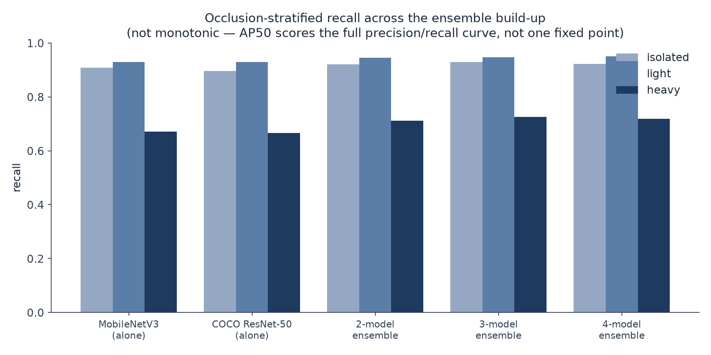
Figure 32. Occlusion-stratified recall across the ensemble
build-up. Not monotonic in every bucket — AP50 scores the whole precision/recall curve, not
recall at one fixed point.
8.7Accuracy-Latency Tradeoff
The measured cost of the 3.9-point gap
This section reports the per-frame cost of the 3.9-point gap, measured by the same protocol as every
other latency number in this report (median over 200 warm runs, batch size 1, GPU synchronized,
Titan Xp).
Component
Median
p95
Peak VRAM
MobileNetV3 Mask R-CNN
84.8ms
85.7ms
902MB
COCO ResNet-50 Mask R-CNN
163.5ms
165.8ms
1146MB
Box detector (also SAM2's prompt source)
29.9ms
30.3ms
309MB
SAM2 image encoder (once/frame)
398.1ms
427.5ms
1453MB
SAM2 mask decode (once/instance)
6.7ms
7.0ms
—
Full four-way ensemble, naive sequential, single frame: ∼778ms (∼1.3 fps) —
roughly 23× too slow for a 30fps real-time budget. SAM2's Hiera-Large image encoder alone
(398ms) is more than half the entire pipeline and outweighs all four Mask R-CNN-family forward passes
combined (278ms). Recorded specifically so the eventual efficiency phase does not start from a false
impression of how close the gap already is. Two mitigation options identified, neither tried yet: a
smaller SAM2 checkpoint (tiny/small vs. this run's Hiera-Large), or running the four models in
parallel across processes/GPUs instead of sequentially.
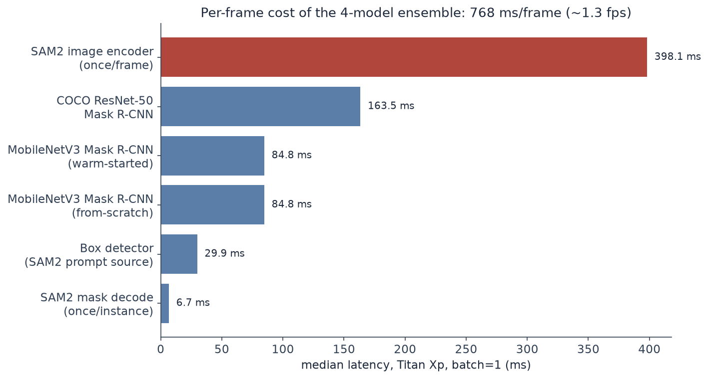
Figure 33. Per-component latency of the four-way ensemble.
The MobileNetV3 Mask R-CNN architecture runs twice (once warm-started, once from-scratch), since both
trained checkpoints are separate ensemble members.
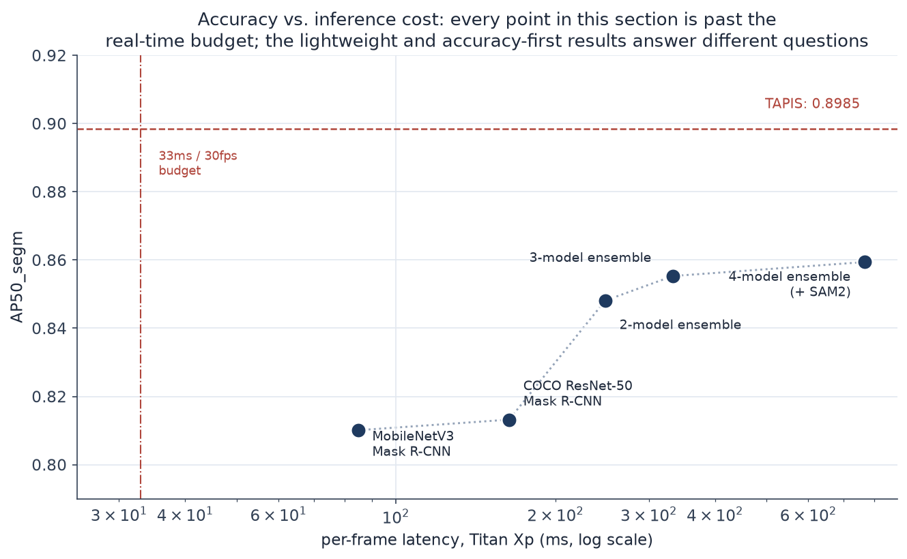
Figure 34. Every accuracy gain in this section plotted
against its measured per-frame cost. The lightweight result (leftmost point) and the accuracy-first
result (rightmost point) answer different questions; this is the tradeoff curve the project set out
to characterize, now climbing in the direction the new priority asked for.
These two numbers answer different questions and neither supersedes the other. 0.8101 is the result
for a single, real-time-plausible model, addressing "how good can the lightweight approach get."
0.8594 addresses a different question — "how good can accuracy get if cost is not yet a
constraint" — which is the question this project was redirected to answer first
(Section 1). Both are reported in full rather than treating one as an upgrade
of the other.
9.Methodological Corrections and Lessons Learned
9.1Official-split-as-validation (a major correction to the project's methodology)
What exactly happened
Discovery trigger: a direct question about whether metrics were being measured on test or
validation data.
What was found: the split-resolution code defined official as
(train, test) — the true 5-case held-out test set. Every config in the repository
at the time (26 files checked, zero exceptions) used split: official. This means
every validation loss/metric logged during training, every early-stopping decision, every
checkpoint-selection decision, and every headline metric reported across Task A, Task B, detection,
tracking, and the first phase of segmentation was measured directly on the official 5-case test split
— there was no held-out validation set distinct from test anywhere in the project's history up to
that date.
Significance: this is not label leakage (test labels never entered the loss function). It is
model-selection leakage: early stopping picks the checkpoint that scores best on test, and every
comparative judgment made in that period (copy-paste vs. plain augmentation, the backbone-depth bug fix,
the tracking max_age sweep) was made by watching test-set performance move. This inflates
every reported number's credibility as a true generalization estimate, by an unquantified amount. It
had not previously been flagged in the project instructions, the specification document, or any prior
results writeup.
How it was caught: a direct question prompted checking the actual split-resolution source and
every config file, rather than assuming the answer. There was no automated test or code-review step in
place at the time that would have caught it.
What was done to correct it: the fix already existed and cost nothing to build —
fold1/fold2 exactly partition the 8 official-train cases and were already
wired to resolve to disjoint (train, val) pairs that never touch official test; this had existed since
early in the project and was simply never used for model selection. Policy from this point forward:
new development work uses fold1 or fold2; once a configuration is locked in,
exactly one final confirmatory run with split: official reports the number that goes in
this report.
Explicitly not applied retroactively: all results completed before this point stand as
reported, now carrying this caveat rather than being silently retracted or re-run. Rationale: rerunning
∼20 completed ablations under a fold split would cost GPU time disproportionate to the value, since
the qualitative conclusions (the occlusion-recall ceiling, the capacity-scaling result, tracking's
net-negative mAP) are unlikely to flip on a 4-case-smaller training set. Two segmentation runs already
in progress at the time were left running on official for the same reason.
Which results carry this caveat vs. which are clean:
Carry the caveat (developed/selected using official-as-validation, before the fix): all of
Section 4 (Task A) and Section 5 (Task B); all of
Section 6 (detection ablations and the tracking tuning sweep); the first four
centroid/offset segmentation runs and the deep-backbone fix runs in
§7.2–7.4.
Clean, post-fix: the Mask R-CNN pivot onward (§7.6 through
Section 8) — fold1/fold2 used correctly as disjoint development splits
(net of the separate, second leakage bug in §7.6, caught and fixed before
producing a number), with each accuracy claim's official confirmatory run reported and explicitly
distinguished from the fold-based development estimate.
9.2Test-data contamination in the first box-then-mask attempt
Covered in full in §7.6: the first attempt at warm-starting the Mask R-CNN
on fold1 reused a box detector that had, unnoticed, already received gradient updates from fold1's own
cases (because it was trained under split: official, which spans both folds). This gave a
val mAP@50 of 0.9946 after a single epoch — an impossible number given as little training as one
epoch, which is exactly what made it suspicious enough to investigate rather than accept. It was not
caught by a held-out check; it was caught because the number itself was implausible. The run was killed
immediately (∼2.5 minutes of GPU time) and never produced a value that appears anywhere in this
report as a result.
9.3Repeated official-test evaluation during the accuracy-first push
Tension identified during this revision, not previously flagged in project
documentation
The project's own stated discipline (§2.2, §9.1) is
"exactly one locked confirmatory run on official test per finished configuration." The accuracy-first
sequence in Section 8 ran six distinct evaluations directly against the
official test set in one continuous session: COCO ResNet-50 alone, the two-way ensemble, the
three-way ensemble, SAM2 zero-shot, SAM2 fine-tuned, and the four-way ensemble — with the decision
to add each successive member made by observing the previous evaluation's official-test score.
This is the same category of problem as §9.1, at smaller scale: each "should we add this
member" decision was informed by official-test feedback, not a held-out development estimate. It does
not mean the 0.8594 number is wrong, and no step in the sequence showed the kind of implausible jump
that flagged the §9.2 leak — but it means the ensemble's reported gains
(+0.0349, +0.0072, +0.0041) should be read as this project's best current estimate under real
inference-time conditions, not as a number with the same procedural guarantee as
§7.8's single official run. This is now stated as an explicit limitation
(Section 11) rather than left implicit.
9.4Corrections made during this document's preparation
Two factual errors in the project's prior internal framing were caught while assembling this report
and are corrected here rather than silently carried forward:
Same-architecture fold1/fold2 ensemble comparison, corrected
Prior framing (used in earlier project communication) described the fold1+fold2 same-architecture WBF
ensemble as landing "below either fold's own single model." Checked directly against the raw evaluation
log for this revision: the ensemble (0.7934) is actually higher than both fold1 alone (0.7652)
and fold2 alone (0.7616). The comparison that appears to have been intended is that the
fold-ensemble (0.7934) falls short of the single model trained on the complete 8-case official
training set (0.8101) — not that ensembling made things worse than either input. Ensembling
two independently-trained, disjoint-case models is a real, unsurprising gain over either alone; it just
does not substitute for training one model on all the data at once. This report uses the corrected
framing throughout (§7.8).
Three near-identical detection "baseline" numbers, disambiguated
An earlier version of this report's prose cited 0.8295, 0.8264, and 0.831/0.8307 in different places
without always naming which specific run each came from, reading as an unresolved inconsistency. Traced
against manifests for this revision: 0.8295 is the original Adam, no-augmentation detection
baseline (§6.1); 0.8264 is the copy-paste-trained detector
(§6.5), which was subsequently adopted as the base detector for every tracking
experiment (§6.6) and is therefore the correct "raw" comparison point in that
section; 0.8307 (rounded to 0.831 in prose) is the class-weighted-loss detector
(§6.3). All three are real, correct numbers for three different configurations;
none was fabricated or in conflict, but they were not consistently labeled by name in earlier framing.
This report names the specific configuration next to every one of these numbers.
9.5Other lessons recorded during the project
An intermittent-looking training crash coinciding with a known unrelated issue (a suspected network
outage) is still worth checking against system logs before accepting the coincidence as the explanation
— the real cause was a kernel OOM kill (§8.4).
A causally-plausible code fix (the non-causal-vs-causal tracking window check,
§6.6) was verified empirically even though code inspection alone suggested it
was already correct — it was, but the empirical check was still worth running rather than trusting
inspection alone.
A result that looks like a clean win on one diagnostic (tracking's fixed-threshold occlusion
recall) can be a net negative on mAP; both numbers are reported together throughout, not just the more
favorable one.
An implausibly good number (near-100% after one epoch, §7.6) is itself
diagnostic evidence of leakage and should be investigated before being reported, not treated as a lucky
result.
10.Comparative Results
One consolidated view of the best result in each task category. Categories are not directly
comparable to each other (different metrics, different tasks) and only the two segmentation rows are
comparable to TAPIS's published number — the table exists to show relative maturity across the
project's four task types, not to rank them.
Task
Best result
Metric
Value
Category
Comparable to TAPIS?
Task A: multi-label classification
MobileNetV3-Small, weighted loss + augmentation
Mean AP
0.745
DEV
No — different task
Task B: region classification
MobileNetV3-Small
Accuracy
0.857
DEV
No — uses GT localization
Detection
Copy-paste, MobileNetV3-Large-FPN
mAP@50
0.8264
DEV
No — box-only metric
Segmentation, lightweight (box-then-mask)
MobileNetV3 Mask R-CNN
AP50_segm
0.8101
OFFICIAL
Yes — 8.8pt gap
Segmentation, accuracy-first ensemble
4-model ensemble + fine-tuned SAM2
AP50_segm
0.8594
OFFICIAL*
Yes — 3.9pt gap
TAPIS (published, reference)
Ayobi et al. 2024
AP50_segm
0.8985
—
—
* See §9.3 — the ensemble build-up sequence involved
repeated official-test evaluation to decide each successive addition, unlike the single locked run
that produced 0.8101.
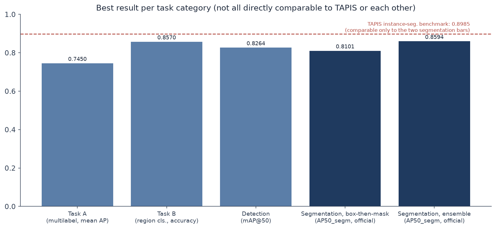
Figure 35. Best result per task category against the TAPIS
reference line. Only the two segmentation bars are on a comparable metric to that line.
11.Limitations
Task B assumes ground-truth instance location (uses the true mask outline, not a predicted one)
— it measures classification given localization, not full-pipeline accuracy.
Rare instruments (Clip Applier: 102 instances total, 64 in the train split alone; Laparoscopic
Grasper: 275) give low statistical confidence on their own metrics throughout every task.
Only 13 real surgeries total (8 train / 5 test) — inter-surgery and inter-surgeon variation
is not well captured by one split, official or fold-based.
The occlusion-stratified recall metric used from §6.4 onward is a
box-overlap proxy, not true pixel-level occlusion, and is evaluated at one fixed confidence threshold
rather than swept the way AP is.
Segmentation instance-level scores (AP50_segm) in the centroid/offset architecture
(Section 7.1–7.5) were computed on a downsampled version of model output,
not full input resolution — real mask quality on that architecture is likely underestimated.
The box-then-mask model (§7.6) reuses the box detector's pretrained
weights rather than training box localization from scratch in the reported configuration — box
accuracy is inherited from Section 6, not independently re-verified at the
segmentation stage (the from-scratch ablation in §7.8 tested this and found
it did not help on official, but that is a different question from whether the inherited box quality
itself has blind spots).
No CPU/ONNX latency was measured for the detection or segmentation models specifically (only for
Task A backbones) — deemed less reliable to estimate for two-stage detectors with a
dynamic-length RPN/ROI pipeline; this number is reported as missing rather than estimated.
Literature comparison numbers (TAPIS and related work) came from published papers and web search,
not a formal systematic review.
Every finding from Section 4 through the first four segmentation runs in
§7.2 was selected using official-test-as-validation, a methodological error
corrected partway through the project (Section 9.1) but not retroactively
re-verified.
The Section 8 four-model ensemble (0.8594) is explicitly not a lightweight
result: ∼778ms/∼1.3fps per frame, roughly 23× too slow for real-time use. It should be
read as the answer to "how good can accuracy get if cost is not yet a constraint," not a straight
upgrade of the 0.8101 lightweight number (§8.7).
Each ensemble configuration in Section 8 was evaluated once on the official
test set, with each successive addition decided by observing that same test set
(§9.3) — there is no repeated-run variance estimate for the ensemble
deltas, and the exact per-model increments (+0.0349/+0.0072/+0.0041) should not be treated as
guaranteed-reproducible.
SAM2's decoder fine-tuning (§8.5) used only GraSP's official training
cases and has not been checked for cross-dataset generalization — directly relevant given the
project's still-pending generalizability validation step (Section 13).
A full per-class AP50_segm breakdown for the fine-tuned SAM2 model and a raw numeric co-occurrence
table (as opposed to the existing figure) were not available in the project's records at the time this
report was assembled (Appendix C).
12.Current State of the Project
Current best lightweight result
Box-then-mask Mask R-CNN, MobileNetV3-Large-FPN backbone (warm-started box detector + trained mask
head), 21.6M params.
AP50_segm = 0.8101 (official, 8.8pt gap to TAPIS)
Detection stage: ∼22ms/frame, 309MB peak VRAM (Titan Xp)
Mask-stage latency not separately benchmarked (Limitation #7)
Major remaining limitation: heavy-occlusion recall (0.672) still trails isolated-instance recall
(0.909) by ∼24 points, though this gap is far smaller than the detection-only architecture's
(∼25–30 points, §6.4).
Current best accuracy result
4-model ensemble: MobileNetV3 Mask R-CNN + COCO-pretrained ResNet-50 Mask R-CNN + from-scratch
MobileNetV3 Mask R-CNN + fine-tuned SAM2 (Hiera-Large), combined via Weighted Boxes Fusion.
AP50_segm = 0.8594 (official, 3.9pt gap to TAPIS)
Latency: ∼778ms/frame (∼1.3fps), Titan Xp, sequential
Generalization status: not yet tested on any dataset other than GraSP.
Best-supported findings
Occlusion between co-occurring instruments, not class imbalance or model capacity, was the
structural bottleneck of every Faster R-CNN-family detector tried — confirmed by six independent
interventions (augmentation, loss weighting, backbone scaling, copy-paste, soft-NMS, tracking) all
landing in the same 0.606–0.666 heavy-occlusion recall band (§6.4).
Region classification with a lightweight model outperforms whole-frame multi-label classification
with the heaviest model tried, on exactly the classes that whole-frame classification struggles with
— the rare-class problem was partly a task-framing problem (Section 5).
Architecture family, more than capacity, appears to have been the binding constraint for
instance-level segmentation:
a 5.88M-param model with the right architecture (box-then-mask) beat a fundamentally different but
larger-capacity 2.1M→5.88M-param centroid/offset model by over 40 AP50_segm points
(Section 7).
Ensembling architecturally different models (different backbones, different pretraining regimes,
or a structurally different foundation-model pipeline) produces real, additive gains at near-zero
extra training cost; ensembling the same architecture on disjoint data subsets does not
(Section 8).
GPU latency ranking does not track parameter count on Pascal-generation hardware without tensor
cores; ONNX CPU latency does — a project-specific but methodologically important reminder that
benchmark hardware choice changes which model looks efficient (§4.3).
Open questions
Does either the 0.8101 lightweight result or the 0.8594 ensemble result generalize to a second,
independent surgical-instrument dataset? Neither has been tested outside GraSP.
Is a fifth ensemble member worth pursuing, given diminishing returns (+0.0349 → +0.0072 →
+0.0041) and the ensemble's growing latency cost, which now directly works against the pending
efficiency phase?
How much of the ensemble's reported 3.9-point gap would survive a properly held-out (rather than
official-test-informed) member-selection process, per the §9.3 caveat?
What does an efficiency pass (quantization, pruning, distillation, or a smaller SAM2 checkpoint
targeting the 398ms encoder bottleneck) recover from either the lightweight or the accuracy-first
result, once priorities 1 and 2 are satisfied?
This project is not finished. The accuracy-first priority (1 of 3, per
Section 1) has a strong, honestly-measured result; generalizability (priority 2)
has not been started against a second dataset; efficiency (priority 3) has not been started at all
beyond the diagnostic latency measurement in §8.7.
13.Recommended Next Experiments
Validate on a second dataset (priority 2). Test the 0.8101 lightweight result, the 0.8132
COCO-ResNet50 result, and the 0.8594 ensemble on a second, independent surgical-instrument dataset
before treating any of them as "the" accuracy number for this approach. Candidate datasets have been
researched but not yet acted on.
Decide deliberately, not by default, whether to pursue a fifth ensemble member or a stronger
backbone. Diminishing returns are already visible by the fourth member
(§8.6); this should be a conscious cost/benefit call, not an assumed next
step.
Re-derive the ensemble build-up decision under a properly held-out protocol (fold1/fold2
rather than official) to produce a cleaner estimate of whether each addition would have been chosen
without official-test feedback, addressing the §9.3 methodological tension
directly rather than only disclosing it.
Only after 1–3 are satisfied, begin the efficiency pass (priority 3): quantization,
pruning, distillation, or a smaller SAM2 checkpoint, targeting first the 398ms SAM2 image-encoder
bottleneck identified in §8.7, and evaluating parallel (rather than
sequential) execution of the ensemble's four members across processes/GPUs.
Measure the box-then-mask model's own speed/size independently (still not done, Limitation
#7) — and consider retraining its box-drawing component from scratch as a check that the inherited
box accuracy is not hiding a blind spot.
One final combined accuracy-vs-cost chart spanning every model in this report (classification,
detection, segmentation, single models and the ensemble) once the above are complete.
Appendix A: Complete Experiment Log
Every run with a recorded final metric, in chronological order. Configuration abbreviated to the
variable that changed; see Appendix B for full hardware/software details.
DEV = development/official-as-validation era,
CV = fold1/fold2 development split (post-correction),
OFF = official confirmatory run.
Run
Task
Split
Key metric
Value
Cat.
baseline_frozen
Task A
official
mean AP
0.6204
DEV
baseline_finetuned
Task A
official
mean AP
0.7113
DEV
imbalance_weighted_loss
Task A
official
mean AP
0.7266
DEV
imbalance_weighted_sampler
Task A
official
mean AP
0.7137
DEV
imbalance_augmentation
Task A
official
mean AP
0.7561
DEV
imbalance_weighted_loss_augmentation
Task A
official
mean AP / macro F1
0.7445 / 0.7076
DEV
sweep_mobilenet_v3_large
Task A
official
mean AP
0.8093
DEV
sweep_efficientnet_b0
Task A
official
mean AP
0.8082
DEV
sweep_resnet18
Task A
official
mean AP
0.7979
DEV
sweep_resnet50_heavy
Task A
official
mean AP
0.8622
DEV
region_baseline
Task B
official
accuracy / macro F1
0.8567 / 0.8251
DEV
detection_baseline (Adam)
Detection
official
mAP@50
0.8295
DEV
detection_baseline_sgd
Detection
official
mAP@50
0.8230
DEV
detection_light_augmentation
Detection
official
mAP@50
0.8040
DEVNEG
detection_augmented (strong)
Detection
official
mAP@50
0.8157
DEVNEG
detection_weighted_loss
Detection
official
mAP@50
0.8307
DEV
detection_resnet50_heavy
Detection
official
mAP@50
0.8081
DEVNEG
detection_resnet50_weighted_loss
Detection
official
mAP@50
0.7998
DEVNEG
detection_copy_paste
Detection
official
mAP@50
0.8264
DEV
detection_weighted_loss_fold1
Detection
fold1
mAP@50
0.8744
CV
detection_weighted_loss_fold2
Detection
fold2
mAP@50
0.8559
CV
segmentation_baseline
Segm. (centroid/offset)
official
mIoU / AP50_segm
0.308 / 0.0017
DEVNEG
segmentation_extended_patience
Segm. (centroid/offset)
official
mIoU / AP50_segm
0.319 / 0.1105
DEVNEG
segmentation_cosine_lr
Segm. (centroid/offset)
official
mIoU / AP50_segm
0.321 / 0.0982
DEVNEG
segmentation_copy_paste
Segm. (centroid/offset)
official
mIoU / AP50_segm
0.309 / 0.1216
DEVNEG
segmentation_deep_backbone
Segm. (centroid/offset, fixed)
official
mIoU / AP50_segm
0.637 / 0.3785
DEV
segmentation_deep_backbone_copy_paste
Segm. (centroid/offset, fixed)
official
mIoU / AP50_segm
0.654 / 0.3802
DEV
instance_segmentation_maskrcnn (fold1)
Box-then-mask
fold1
AP50_segm
0.8458
CV
instance_segmentation_maskrcnn_fold2
Box-then-mask
fold2
AP50_segm
0.8433
CV
instance_segmentation_maskrcnn_fold1_scratch
Box-then-mask, from-scratch
fold1
AP50_segm
0.8605
CV
instance_segmentation_maskrcnn_fold1_copypaste
Box-then-mask + copy-paste
fold1
AP50_segm
0.8646
CV
instance_segmentation_maskrcnn_official
Box-then-mask
official
AP50_segm
0.8101
OFF
instance_segmentation_maskrcnn_official_scratch
Box-then-mask, from-scratch
official
AP50_segm
0.8061
OFFNEG
instance_segmentation_maskrcnn_official_copypaste
Box-then-mask + copy-paste
official
AP50_segm
0.7734
OFFNEG
instance_segmentation_maskrcnn_resnet50_coco
Box-then-mask, COCO ResNet-50
official
AP50_segm
0.8132
OFF
fold1+fold2 WBF ensemble
Box-then-mask ensemble
official (eval)
AP50_segm
0.7934
OFFNEG vs. official single
2-model ensemble (MobileNetV3 + COCO ResNet-50)
Ensemble
official (eval)
AP50_segm
0.8481
OFF
3-model ensemble (+ from-scratch)
Ensemble
official (eval)
AP50_segm
0.8553
OFF
SAM2 zero-shot
Foundation model
official (eval)
AP50_segm
0.7690
OFFNEG
SAM2 fine-tuned decoder
Foundation model
official (eval)
AP50_segm
0.7966
OFF
4-model ensemble (+ SAM2)
Ensemble
official (eval)
AP50_segm
0.8594
OFF
Tracking-by-detection variants (9 runs), the soft-NMS comparison, and full latency
benchmarks are tabulated in their originating sections (§6.6,
§6.2, §4.3, §8.7) rather
than repeated here.
264.3 → 822.3 img/s (0→4 workers), 2–4.5× the uncached pipeline
Latency protocol
Single image, batch=1, torch.cuda.synchronize(), warmed up, median/p95 over ≥200 runs, Titan Xp; ONNX Runtime CPU latency measured in parallel where available
Ensembling method
Weighted Boxes Fusion, Solovyev et al. 2021
Tracker
IOU-Tracker, Bochinski et al. 2017, greedy box-IoU association
Foundation model
SAM2.1, Hiera-Large checkpoint, box-prompted
Appendix C: Additional Figures and Pending Visualizations
The following figures are described by the original figure-requirements list for this document but
were not generated for this revision, because producing them correctly requires running fresh inference
with saved checkpoints (available on the training workstation) rather than plotting numbers already on
record. They are listed here as known gaps rather than left unmentioned:
Representative detection successes and failures — example frames with predicted boxes
overlaid, showing a correct detection and a missed/false-positive detection under occlusion. Requires
loading a saved detector checkpoint and running inference on held-out frames.
Representative predicted masks vs. ground truth (both the centroid/offset architecture and
the box-then-mask architecture) — requires the same fresh-inference step for the segmentation
checkpoints.
Visual example of a track bridging an occlusion, and one where stale tracking produces a false
detection — requires running the tracker on a raw video window and rendering the result, not
just the aggregate metrics already reported in §6.6.
Full per-class AP50_segm breakdown for the fine-tuned SAM2 model — only the zero-shot
per-class table (§8.5) was available in the project's records; the fine-tuned
model's per-class numbers were not separately logged.
Raw numeric co-occurrence table — the co-occurrence matrix exists as a pre-generated
figure (Figure 3) but the underlying pairwise counts were not separately exported as text/JSON for this
revision.